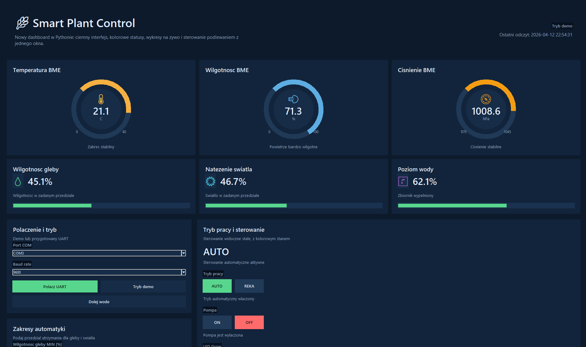
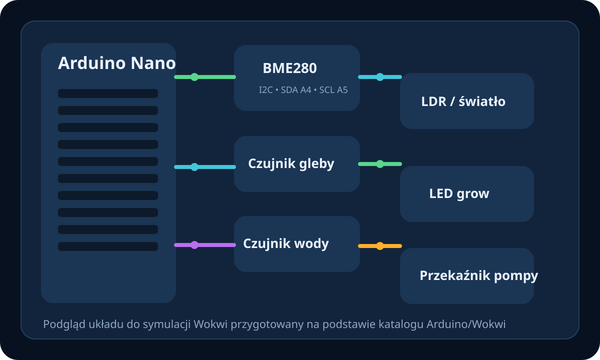

Projekt przedstawia system monitorowania warunków wzrostu roślin z częścią sprzętową, logiką sterowania oraz aplikacją desktopową w Pythonie. Interfejs pokazuje odczyty czujników w czasie rzeczywistym, tryb automatyczny i ręczny, zegary BME oraz zapis danych do pliku CSV.
System został zaprojektowany jako układ do utrzymywania stabilnych warunków wzrostu roślin przez pomiar parametrów środowiska i sterowanie elementami wykonawczymi. Część sprzętowa, symulacyjna i aplikacyjna współpracują jako jeden spójny projekt.
Utrzymanie odpowiedniej wilgotności gleby i poziomu oświetlenia roślin przy możliwie prostym, czytelnym sterowaniu oraz rejestracji danych do dalszej analizy.
Interfejs w Pythonie pozwala wygodnie obserwować stan pompy, LED, czujników oraz historii pomiarów w jednym miejscu.
Poniżej znajduje się widok aplikacji. Interfejs pokazuje trzy okrągłe zegary BME na górze, metryki rośliny, przewijalny widok, wyraźne przełączniki trybu pracy oraz kolorowy stan pompy i LED.

Funkcjonalność obejmuje pomiar, sterowanie, podgląd parametrów oraz symulację działania układu.
System monitoruje kluczowy parametr odpowiadający za decyzję o uruchomieniu pompy.
Temperatura, wilgotność powietrza i ciśnienie są pokazane jako trzy okrągłe zegary w górnej części dashboardu.
Przy niskim natężeniu system może aktywować doświetlanie, zgodnie z zadanym progiem.
Zabezpieczenie pompy przed pracą na sucho pozostaje jednym z ważniejszych mechanizmów bezpieczeństwa.
Użytkownik może przełączać się między sterowaniem automatycznym a ręcznym dla pompy i oświetlenia LED za pomocą kolorowych przełączników.
Każdy pomiar trafia do pliku CSV, a historia jest od razu pokazywana w postaci wykresów trendu.
Rdzeń projektu obejmuje część sensoryczną i wykonawczą, logikę decyzyjną oraz warstwę prezentacji. Dzięki temu możliwe jest zarówno sterowanie układem, jak i czytelna obserwacja parametrów środowiskowych.
Zastosowane rozwiązania obejmują zarówno elementy sprzętowe, jak i oprogramowanie wykorzystywane w projekcie.
Projekt posiada również publiczną symulację w Wokwi. Poniżej znajduje się podgląd układu oraz odnośnik do wersji online.

Symulacja pozwala sprawdzić układ Arduino, czujniki oraz podstawowe połączenia w środowisku online.
Link: https://wokwi.com/projects/461119979508150273
Projekt został zrealizowany zespołowo z podziałem na część programową i sprzętową.
Oprogramowanie
Hardware
Opis projektu został oparty częściowo na dokumencie Projekt Zespołowy Raport 1.pdf, zwłaszcza w zakresie celu systemu, listy czujników, pompy DC, LED grow, komunikacji UART i logowania danych.